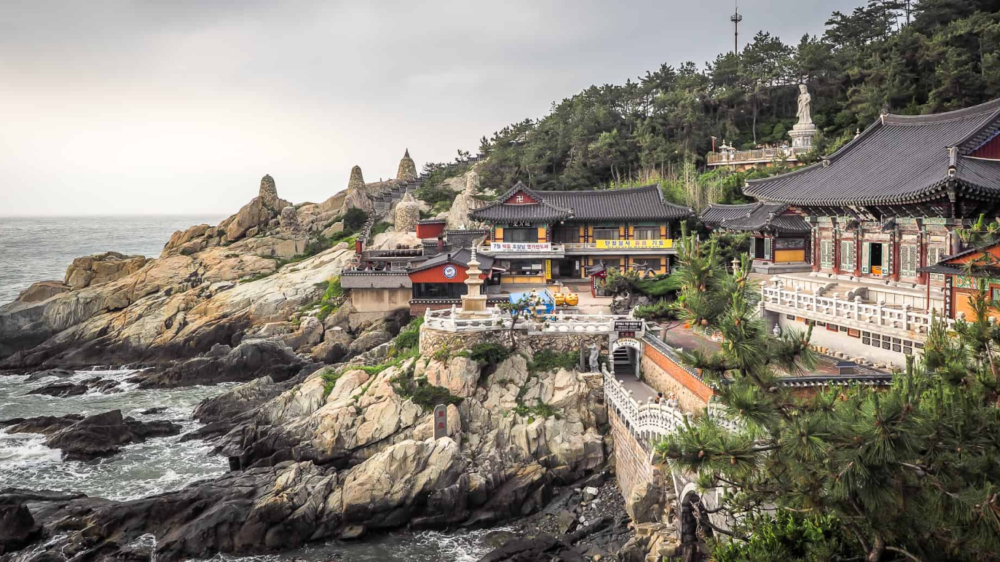

SUA PRÓXIMA VIAGEM:
Busan, a estrela em ascensão da Coreia do Sul, oferece de tudo, desde
churrascarias de primeira linha até tradicionais barracas de comida de
rua. Aqui,
exploramos a segunda cidade da Coreia do Sul e descobrimos as suas ofertas
culinárias.
PARA OS AMANTES DE HISTÓRIA
As atrações de Busan vão desde templos budistas centenários que pontilham
as montanhas e o litoral da cidade até praias imaculadas com águas
cristalinas. Esta cidade litorânea tem muitas coisas para fazer o ano todo
- as famílias podem passar o tempo em um aquário à beira-mar, os
compradores podem explorar bairros vibrantes e os amantes da natureza
podem desfrutar de longas caminhadas até mirantes panorâmicos.
Os santuários budistas que pontilham a costa e as montanhas de Busan têm
uma arquitetura impressionante que irá encantar os fotógrafos.

O Templo Haedong Yonggungsa é um templo budista localizado no extremo
nordeste de Busan. Construído em 1376, é um dos poucos templos na
Coreia construídos à beira-mar - você pode desfrutar de vistas do Mar
do Leste de um lado e de belas montanhas do outro.
Bom para:
O Templo Beomeo-sa é um dos maiores santuários da Coreia do Sul. Ele
está localizado no alto da borda leste da montanha Geumjeongsa e fica
distante da agitação da cidade. O Daeungjeon Hall do templo é um
exemplo bem preservado da arquitetura da Dinastia Joseon.
Bom para:
O Parque Yongdusan, localizado no centro de Busan, abriga alguns dos
monumentos mais importantes da cidade. Você pode ver vistas
espetaculares
do topo da Torre Busan, de 120 metros de altura. O parque tem 2 museus
- confira os instrumentos musicais tradicionais no Museum of World
Folk
Instruments e mais de 80 veleiros coreanos no Exhibition Hall of World
Model Boats.
Bom para:
As melhores coisas para fazer em Busan mostram a reputação da cidade
como um importante porto marítimo na Ásia. Frequentemente vista como a
essência da Coreia do Sul, você experimentará uma atmosfera única em
termos de diversidade étnica e cultural, já que a cidade recebe um
público
cosmopolita o ano todo.